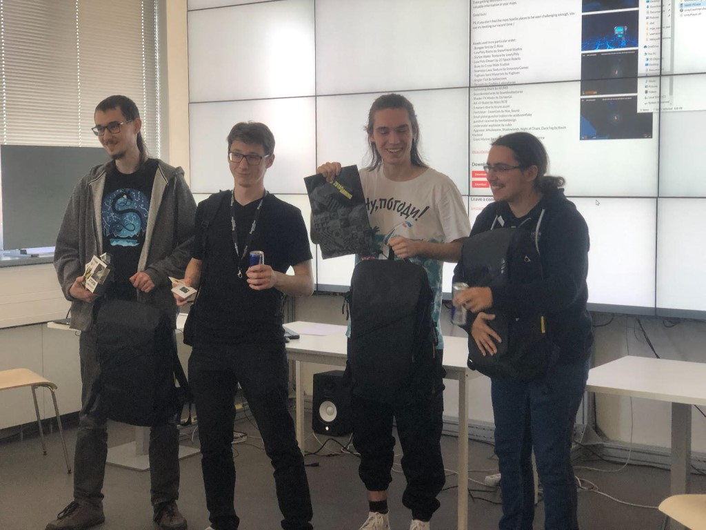
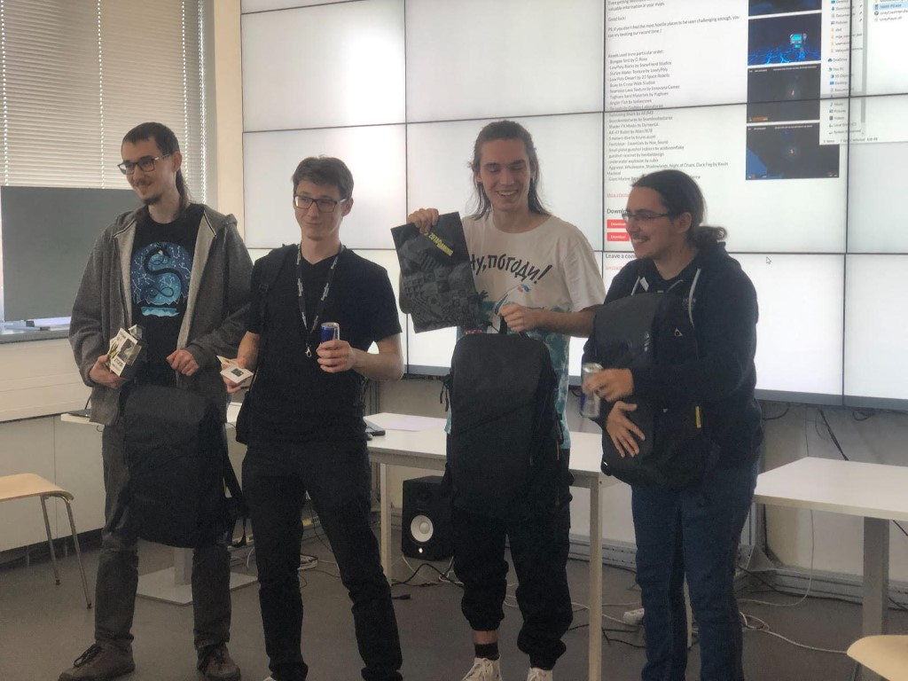
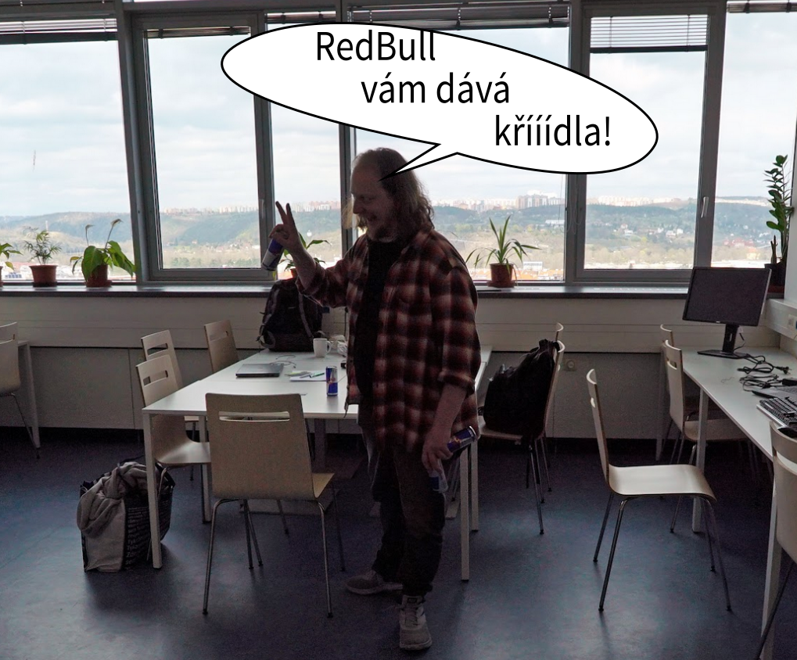
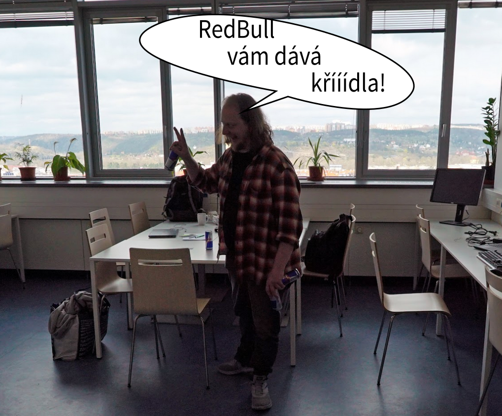

Vektory a langoše
O velikonočním víkendu 15.4. - 17.4. 2022 proběhl na Fakultě informačních technologií další ročník GameJamu pořadaný skupinou Grafit a SAGElabem. Šest skupin si odřeklo mnoho hodin spánku a dobrovolně, po dvě noci strávili společně na fakultě a věnovali se hrám. Ale nejen jim - společná akce, přednášky, kvízy, pizza, langoše, turnaje v retro hrách i VR vyplňovaly okamžiky odpočinku a socializace v hluboké noci, v poledne i nad ránem. Touha vytvořit vlastní hru, zkombinovat dané ingredience v originální spojení a to vyslat hrdě světa dovedla účastníky až - a to doslova - na samotný vrchol. (strop jejich chopností? / neco jineho? - alegorizuju tady vystup na strechu).
Účastníci dostali k výběru čtyři ingredience, ze kterých si vybírali tři. Ty měli využít ve své hře a nějakým způsobem je zapojit. Šlo o:
-
Struktura
-
Mlha přede mnou, mlha za mnou
-
Malý / Velký
-
Neúspěchem k úspěchu
Hry se odevzdávaly přes platformu itchi.io a tak už pár minut po skončení jamu si začaly výtvory účastníků žít vlastním životem. Připraveny ke stažení, ohodnocení, okomentování kýmkoliv - i Vámi. Jediné co potřebujete, je vytvořit si zde účet.
16000PSI - 1. místo


První skupina studentů se rozhodla vsadit na jistotu. Svérázná kombinace Subnauticy a Elden ringu v kombinaci s dokončeností, rozhraním schopným si poradit i 10K rozlišením a podmanivou hudbou vytvořila funkční mix, díky kterému si hra zasloužila první místo.
“První místo bylo letos umistěno velmi těsně. Tak těsně, že rozdílem bylo doslova jen pár taktů hudby. Podmanivé hudby hlubin, kterou disponovala hra 16000PSI. S robotickými mechy zde prozkoumávate hend tři různé úrovně Mariánského přikopu a čelíte hned několika druhům podmořských netvorů. Čekaným i nečekaným. Hra vyuřila také oblíbené (a proklínané) mechaniky dropu získaných bonusů. A pak po smrti čelíte rozhodnutí, zda co nejrychleji doběhnout k mrtvole pRědchozího mecha, nebo neopak postupovat o to opatrněji” Radek Richtr
Ethernal Effort - 2. místo
Pozor, komentář obsahuje spoilery!
Druhá skupina studentů se vrhla do tajemna a pokusila se z dodaných ingrediencí vytěžit maximum. Šedobílý svět věčné továrny utopený v mlze v kombinaci s maličkým človíčkem, údržbářem lamp se stal esenci hned dvou ingrediencí a tvoření baterií do lamp pak zastoupilo ingredienci třetí - strukturu. Až když ale hráč skutečně pochopil i tu poslední ingredienci, když si uvědomil že věci se nemají tak, jak se zdá, pochopil že k úspěchu se musí někdy neuspět. Absence audio stopy však zajistila velmi těsné, byť stále pěkné, druhé umístění.
“Eternal Effort je, jak už je patrné z jejího názvu, hra projektující podobenství o nekonečném cyklu rutinního pracovního života - rozsvěcování poruchových lamp v areálu továrny, jež je zahalena v mlze. Leč, hráči se naskýtá možnost ustoupit od iluzí uzavřeného procesu a vydat se alternativní cestou, která jediná končí úspěchem v podobě dohrané hry. Indicií je tu poskrovnu, je tedy potřeba být bdělý a prozkoumávat okolí. Až na chybějící zvukovou složku je hra prakticky kompletní - není tu nic navíc a nic tu naopak nechybí. Hra sází na minimalistický styl, díky kterému vše působí odladěně a funkčně. Jinými slovy - čisté a prosté. O tom by měl Gamejam být.” Adam Vesecký
Shructure - cena účastníků
Názor poroty je jedna věc. Ale někdy ani post učitele her, ani práce ve Warhorse, ani nadšení pro gaming a hry všeho druhu nemusí zcela souznít s názory hráčů. Nebo - v tomto případě - účastníků. V tomto ročníku jsme proto vyhlásili i vítěze, o kterém hlasovali právě ti, kteří zde hry tvořili.
Cenu účastníků si vydobyl třetí tým se svoji kreativně pojmenovanou hrou, naznačujícím hlavní mechaniku hry, zmenšování. Top-Down střílečka je pak - jak je z ocenění znát - zábavnou akcí. Akcí, kde no-hit run nevede k cíli, a kde je někdy výhodné nechat se dokonce i zastřelit!
“Za mne bylo využití ingrediencí ve hře Shchrrscture ukázkové a na výbornou. Autoři využili v mechanikách dokonce dvě z nich a přidali strukturu v podobě bludiště. Grafika sice není propracovaná, ale jistě nejsem jediná, kdo na hrách víc ocení hratelnost či nápad. Dle mého názoru jde o solidní základ, který by bylo fajn dokončit.” Petra Svíčková
Shuffled run
Hra čtvrtého týmu se sice neumístila na vítězných pozicích, ale i tak jde o hru zasluhující nemalou pozornost. A možná to byla i komplexita promyšlené mechaniky, která způsobila, že hra (minimálně v době odevzdání) nefunguje úplně tak, jak by měla. Změna struktury levelu, hlavní mechanika jinak vizuálně uchvacující hry je poněkud chaotická a nestabilní. Spolu s tím, že tuto tutoriál mohl být dotaženější způsobil, že hra nemohla útočit na tři vítězné pozice, které by si jinak jistojistě zasloužila.
“Shuffled Run je graficky nejhezčí hra se zajímavým nápadem, kterým je prohazování místností. Je škoda, že ambiciozní tým nestihl pořádný playtesting; hráč je zmaten přemírou konceptů najednou i nekonzistentním chováním okrajů místností. Také příběh máme v popisu hry, ale ve hře chybí. Tým měl velké plány, sama hra má velký potenciál; doufejme, že její vývoj neskončil a že o ni ještě uslyšíme.” Honza Matoušek
“Shuffled run byl pro mě na první pohled jasným kandidátem na vítěze. Krásná atmosféra, povedená grafika, hudební podkres nebo skvělý nápad s přesouváním místností jako postup k dokončení levelu. Hru je rozhodně za co chválit, ale z onoho pomyslného stupínku vítězů ji bohužel shazuje zjevný konečný spěch a odevzdání na poslední chvíli. Pohyby hráče jsou nedotažené, přesouvání místností spíše nefunguje než funguje a celá hratelnost výrazně upadá až na úroveň, kde člověk přemýšlí, jakým způsobem je třeba postupovat k cíli. Z použitých ingrediencí se mi podařilo zachytit jen „strukturu“ a „neúspěchem k úspěchu“. Ačkoliv výtek je velké množství, mám za to, že týmu zbýval krůček k odladění hratelnosti, vyřešení nepříjemných bugů s přesunem místností a rázem by aspiroval na vítězné příčky.” Jiři Melnikov
Suez run
Ani hra pátého týmu neskončila před cílem a zdárně doplula do cíle. Meandry vývoje sice možná narovnaly původně klikatou řeku, passáty možná nejen že napnuly plachty ale také trochu pomíchaly náhodné generování ker, ale i tak je Suez run zajímavá hra. A co je zajímavé - skvěle vypadající i na obřím 10K rozlišení.
“SuezRun je pohodová arkádovka, kterou si pouštíte opakovaně. Sice se zadanými ingrediencemi příliš nepracuje, zato pracuje s humorem a herním flow. Pokud autoři přidají multiplayer na jedné obrazovce a různé průplavy různých tvarů, může z ní být skvělá hra na herní večery s kamarády.” Honza Matoušek
Během celé akce byl učastníkům k dispozici FIT tak jak jej znaji i neznají - laboratoř SAGELab se proměnila na moderní herní doupě, laboratoř Glab nabídla zábavu svojí novou dotykovou stěnou, retroherna poskytla konzole jako Vectrex a NES a celou budovou se nesla vůně palačiněk, rýžových kuliček a langošů. A to až na sluncem prohřátou střechu, která se díky místní legendě o Broskvoni otevřela i učastníkům.
Pořadatelé
A konečne onou šestou skupinou lidí, kteří se na celé akci podíleli, kteří obětovali svůj čas a energii k tomu aby se vůbec dala uskutečnit jsou její pořadatelé. Malá, ale pestrá skupina lidí, která se z mystických důvodů ukrytých v mlze tak husté, že by se dala krájet, spojila v jeden celek a svým přispěním - ať už menším i větším - umožnila celou akci i přes některé klíčové neúspěchy dotáhnout do zdárného konce. Za prostory SAGElabu, přenosy i přípravu restPointu i noční doom/quake/trackmania/CS turnaje tak patří poděkování dvojici Jiří Melnikov a Jiří Kubišta. Všeobjímající znalosti z herního vývoje a historie v kombinaci s nečekaným kulinářským talentem pak poskytl Adam Vesecký. O platformu k odevzdání, rady s vývojem a spoustu technické práce, která ji jinak těžko vidět se opět postaral Kryštof Šuk a skvěle jej přitom mnoha radami k týmům a k vývoji a bugům doplňoval Honza Matoušek. Tím, kdo se postaral jak o samotné ingredience, tak i o nespočet kódů ze kterých si účastníci vybírali odměny byla věčně akční a usmívající se Petra Svíčková. O tuzemskou PR se pak postaral Ondra Brém, mezinárodní vztahy zajistil Josef Kortan, a vizuál plakátu poskytl Vojtěch Tomas. Těm všem platí dík. A rozhodně ne malý, ale velký! Díky.


Fotogalerie


 


 

Sponzoři a Partneři
Opravdu obří dík patří studiu Warhorse Studios – nejen ze velmi, hodnotné ceny, ale i za účast v naší porotě za podnětnou debatu a postřehy směrem ke studentům i jejich hrám (a za langoše).
K dalším sponzorům pak patřili:
-
IPR – Centrum Architektury a Městského Plánování (pomoc s organizací),
-
Zotac (věcné ceny vítězům),
-
Warhorse Studios (věcné ceny vítězům),
-
APHGAMES.CZ (odborná porota a občerstvení)
-
a Fakulta softwarového inženýrství FIT ČVUT (občerstvení).
Nezanedbatelný dík patří lidem z laboratoře SAGElab (Jiří Melnikov a Jiří Kubišta), Petru Paušovi za VR turnaj a organizace CESNET za poslytnutí laboratoře SAGElab, pomoc s organizací a proaktivní vyřešení rest pointu.
Hlavní sponzor:
Další sponzoři:
Partneři: